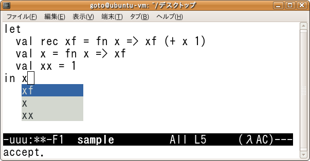

Lambda-mode version 0.22
This page provides an implementation of variable name completion for a
core functional language with let polymorphism in Emacs-mode.
The lambda-mode is implemented based on the algorithm in the paper:
-
Isao Sasano,
Takumi Goto,
An approach to completing variable names for implicitly typed functional languages,
Higher-Order and Symbolic Computation,
Volume 25, Issue 1, pp. 127-163, August 2013.
Springer.
(This is a journal version of the paper in PEPM 2012 below.)
-
Takumi Goto,
Isao Sasano,
An approach to completing variable names for implicitly typed functional languages,
ACM SIGPLAN 2012 Workshop on Partial Evaluation and Program Manipulation
(PEPM 2012),
pp. 131-140, Philadelphia, Pennsylvania, USA, January 23-24, 2012.
How to download and how to use
Download
lambda-mode-0.22.tar.gz,
unzip and untar it, and then follow the instructions in README file.
Screenshot

Old versions
Back to the top page